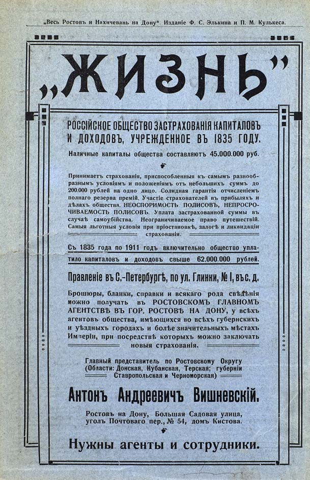

Лист источника 2
Скан

Распознанный текст
„Весь Ростовъ и Нахичевань на Дону“. Изданіе Ф. С. Элькина и П. М. Кулькеса.
„ЖИЗНЬ"
РОССІЙСКОЕ ОБЩЕСТВО ЗАСТРАХОВАНІЯ КАПИТАЛОВЪ
И ДОХОДОВЪ, УЧРЕЖДЕННОЕ ВЪ 1835 ГОДУ.
Наличные капиталы общества составляютъ 45.000.000 руб.
Принимаетъ страхованія, приспособленныя къ самымъ разнооб-
разнымъ условіямъ и положеніямъ отъ небольшихъ суммъ до
200.000 рублей на одно лицо. Солидная гарантія отчисленіемъ
полнаго резерва премій. Участіе страхователей въ прибыляхъ и
дѣлахъ общества. НЕОСПОРИМОСТЬ ПОЛИСОВЪ, НЕПРОСРО-
ЧИВАЕМОСТЬ ПОЛИСОВЪ. Уплата застрахованной суммы въ
случаѣ самоубійства. Неограничиваемое право путешествій.
Самыя льготныя условія при пріостановкѣ, залогѣ и ликвидаціи
страхованія.
Съ 1835 года по 1911 годъ включительно общество упла-
тило капиталовъ и доходовъ свыше 62.000.000 рублей.
Правленіе въ С.-Петербургѣ, по ул. Глинки, № 1, въ с. д.
Брошюры, бланки, справки и всякаго рода свѣдѣнія
можно получать въ РОСТОВСКОМЪ ГЛАВНОМЪ
АГЕНТСТВѢ ВЪ ГОР. РОСТОВѢ НА ДОНУ, у всѣхъ
агентовъ общества, имѣющихся во всѣхъ губернскихъ
и уѣздныхъ городахъ и болѣе значительныхъ мѣстахъ
Имперіи, при посредствѣ которыхъ можно заключать
новыя страхованія.
Главный представитель по Ростовскому Округу
(Области: Донская, Кубанская, Терская; губерніи
Ставропольская и Черноморская)
Антонъ Андреевичъ Вишневскій.
Ростовъ на Дону, Большая Садовая улица,
уголъ Почтоваго пер., № 54, домъ Кистова.
Нужны агенты и сотрудники.